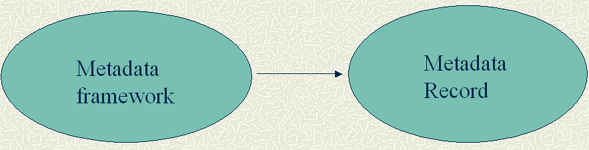

Anita Coleman, Asst.
Prof.
School of Information Resources &
Library Science, University of
Arizona, Tucson

Content standard - Conceptual (elements of description)
Encoding standard - Container (markup or container scheme)
elements of description - embedded, associated, or external
Levels of Data - Controlled vocabularies or free-text
Rules governing metadata elements, Inputting Guidelines.
[ ECURE Home | Archives | 2002 Presentations ]
© 2002 Anita Coleman — Last Modified Thursday 26 June 2003